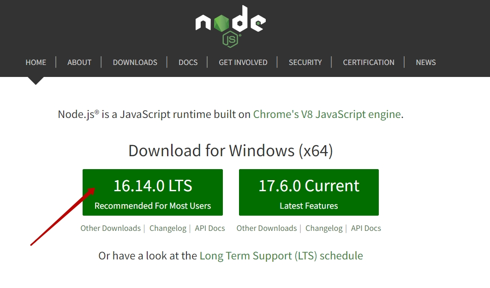
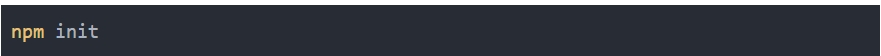
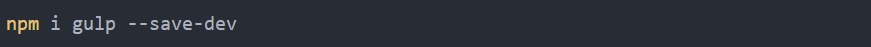
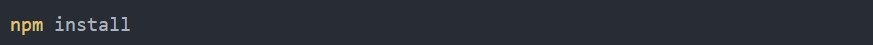
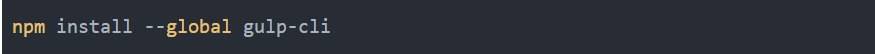
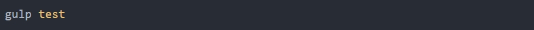

Gulp — это программа для выполнения задач, которая использует Node.js в качестве платформы. Gulp использует только код JavaScript и помогает запускать внешние задачи и крупномасштабные веб-приложения. Он создает системные автоматизированные задачи, такие как минимизация CSS и HTML, объединение библиотечных файлов и компиляция файлов SASS. Эти задачи можно запустить с помощью сценариев Shell или Bash в командной строке.
Установка Gulp 4 довольно простая. Так как Gulp написан на языке javascript, изначально необходимо установить Node.js.
С сайта Node.js нужно скачать и установить инсталлятор последней версии.

Далее создаеется папка для проекта и вызывается окно терминала в этом каталоге. В командной строке необходимо запустить инициализацию проекта:

В результате получается файл package.json, который содержит информацию о проекте и установленных плагинах.
Далее необходимо установить gulp в проект:

После установке Gulp 4 название пакета и его версия сохранятся в файле package.json. Флаг --save-dev используется для сохранения пакета в package.jsonв раздел devDependencies, то есть в целях разработки.
Если установить пакет с флагом --save, то пакет попадает в раздел dependencies (для запуска приложения).
Такой подход дает возможность сохранять все пакеты в файле package.json со всеми зависимостями, а при разворачивании нового проекта достаточно скопировать файл package.json и запустить команду:

В результате, все пакеты и зависимости установятся автоматически. После установки gulp в каталоге проекта создалась папка node_modules. Все новые установленные пакеты и зависимости сохраняются в данную папку. Поэтому изменять содержимое этого каталога нельзя.
Далее в каталоге проекта создаем файл gulpfile.js. Это самый
Для запуска Gulp можно установить отдельную утилиту глобально:

После этого в консоли ввести команду gulp и через пробел название задачи:
